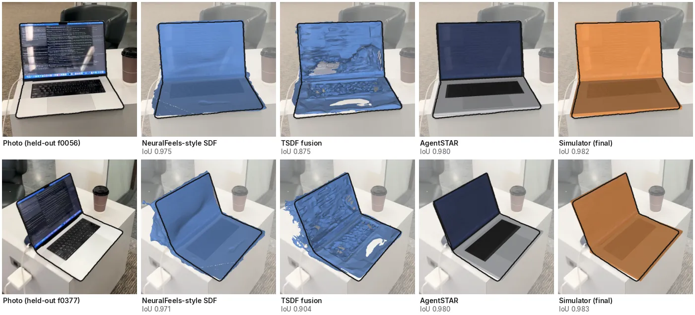
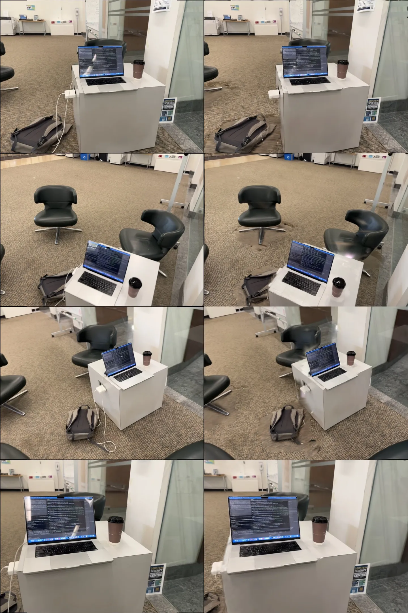
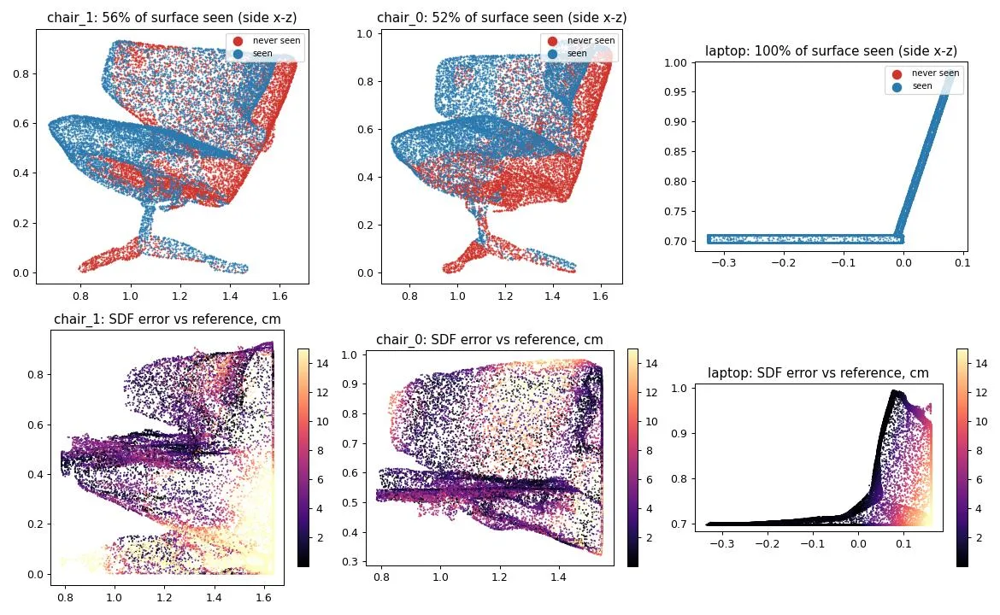
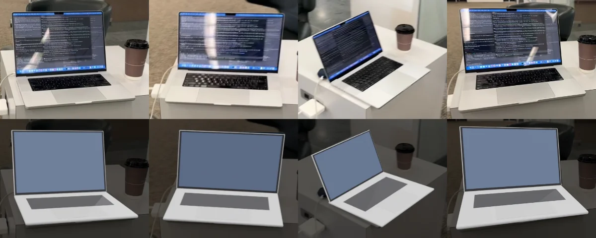
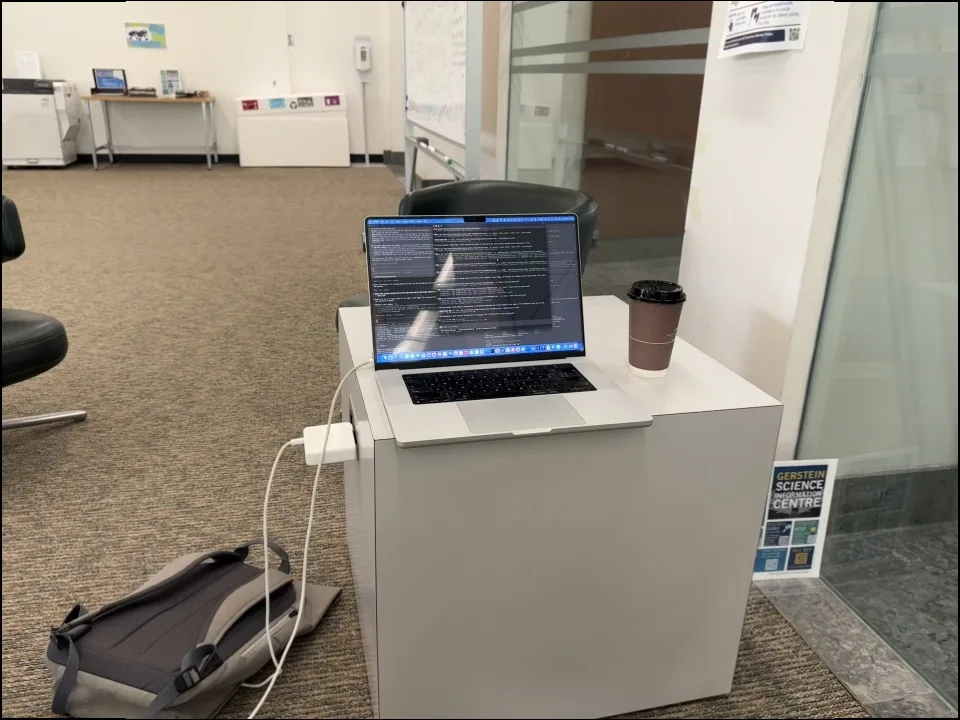
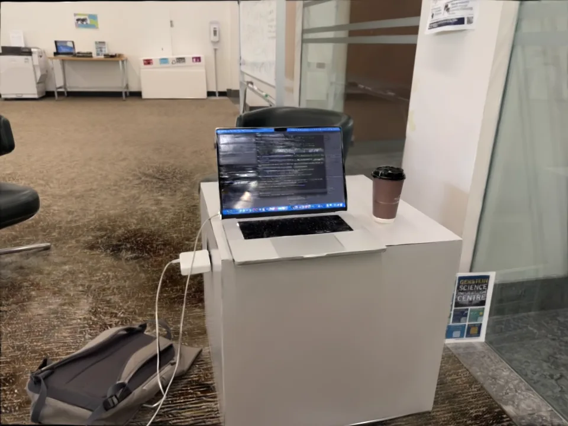
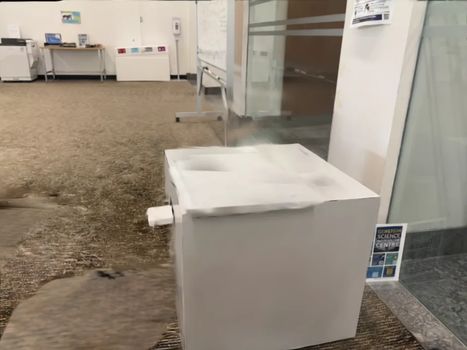
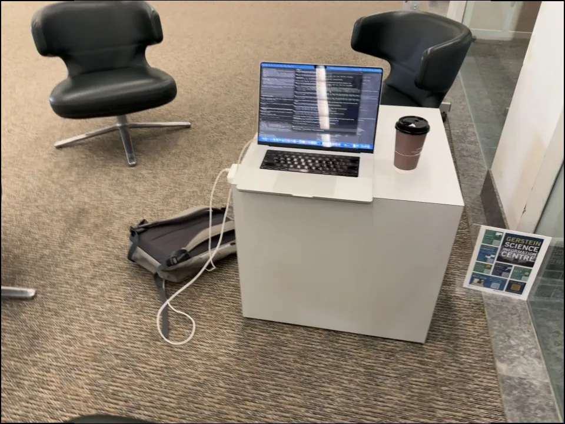
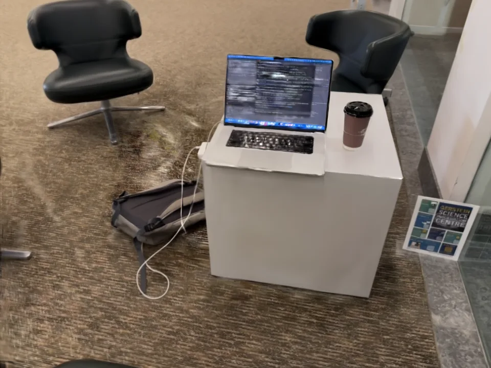
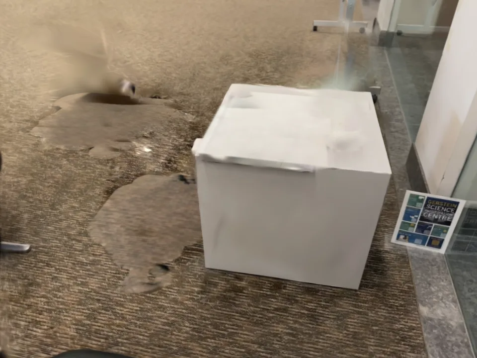

Real to sim · October 2026
A real room,
as a simulator.
One 15.7-second phone video, rebuilt as a trained Gaussian room with five movable objects: a laptop with a hinge, two swivel chairs, a coffee cup and a backpack. The scene runs MuJoCo physics, with real collision geometry, right here in your browser.
Loading 0.73 M Gaussians (about 12 MB)…
Loading…
Everything is rendered from Gaussian splats with Spark; MuJoCo 3.15 (WebAssembly) runs the same model as the exported MJCF: the same bodies, joints, masses, friction and collision shapes (boxes, cylinders and convex hulls). Where you look at a part from a side the video never saw, it is drawn with its mesh instead of a smeared splat. Polished swaps every object for its part model (seat shell, star base, lid, straps), fitted to the same video frames the way the laptop was; physics is identical in both views. Masses and friction are assumptions. Physics model ↗
Next scene · in progress
A real kitchen, as a simulator.
A 3:53 walk-through of a home kitchen in which cabinets, drawers, the oven, the fridge and the freezer are opened and items are moved. The goal: every door, drawer and appliance articulated, every counter item movable, exported to MuJoCo and Isaac Sim for training. This viewer shows the newest result of each stage as it lands.
An offline reconstruction at depth-estimated metric scale. Move an object, open a door or drawer, or press an appliance button. Scan shows the observed Gaussians; Polished shows the textured part models. Physical properties are assumptions. Stored contents activate when their container opens. Physics is experimental; some objects shift substantially during settling. Browser physics model ↗
Original splat preview & pipeline progress
Loading…
Loading…
Results
Every method,
side by side.
Each object was reconstructed several ways and scored on held-out video frames (every 8th frame, never used for fitting). The simulator keeps the shape that is accurate and complete, closed and articulated.
| Held-out silhouette IoU | NeuralFeels-style SDF | TSDF fusion | Generated (Hunyuan3D) | Part model (polished) | Scan mesh | Simulator collides with |
|---|---|---|---|---|---|---|
| Laptop | 0.975 | 0.890 | – | 0.977 | 0.979 | AgentSTAR part model: base + lid boxes, hinge |
| Coffee cup | 0.943 | 0.945 | – | 0.938 | 0.943 | Cup profile fitted to 75 silhouettes |
| Table | 0.935 | 0.967 | – | – | 0.945 | Box fitted to 79 silhouettes |
| Left chair | 0.909 | 0.944 | 0.836 | 0.833 | 0.849 | Part model (one shape for both chairs): shell, cushion, column, 4-prong base; swivel |
| Right chair | 0.787 | 0.819 | 0.659 | 0.765 | 0.680 | Same chair model, its own pose |
| Backpack | 0.787 | 0.905 | 0.830 | 0.858 | 0.849 | Part model: rounded body (straps visual only) |
Same frames for every method; outline-only silhouettes against SAM 2 masks with other objects ignored, nine verified mask label errors excluded. Bold is the best score; orange is the shape the simulator collides with. Part model is the clean model behind the simulator’s Polished view: built from parts and fitted to the video like the laptop. The two chairs share one fitted shape; with the swivel axis held under the seat centre, it raises the right chair from 0.680 to 0.765. Fused reconstructions (SDF, TSDF) score highest on outlines because they only have to explain what the camera saw: they are open or slab-filled on the unseen side and have no joints (see the bottom row of each comparison and why). All numbers ↗

The whole scene against the video
The full simulator, depth-ordered, rendered from the held-out cameras. Before: the first export. Now: AgentSTAR laptop, refit cup, table and chairs, fine-tuned link Gaussians.
| Silhouette IoU (occlusion-aware) | Before | Now |
|---|---|---|
| Laptop | 0.891 | 0.961 |
| Coffee cup | 0.755 | 0.881 |
| Table | 0.792 | 0.876 |
| Left chair | 0.796 | 0.840 |
| Right chair | 0.659 | 0.678 |
| Backpack | 0.824 | 0.814 |
| Appearance (held-out) | Before | Now | Full splat |
|---|---|---|---|
| PSNR in object masks | 18.6 dB | 21.5 dB | 21.4 dB |
| SSIM in object masks | 0.760 | 0.808 | 0.812 |
| PSNR, full frame | 20.3 dB | 21.9 dB | 20.1 dB |

The “full splat” column is the unsegmented reconstruction, the upper bound for appearance. Physics validation: objects settle within 3.2 mm, starting penetration under 0.04 mm, the lid holds its angle (friction-held hinge) and the joints reach their full range. Evaluation ↗ Before ↗ Physics ↗ Label errors ↗
Diagnosis
Why NeuralFeels
falls short here.
The NeuralFeels-style neural SDF is excellent on the laptop and cup. On the chairs and backpack it fails for measurable reasons, all of them about the capture, not the method.

- Half of each chair was never seen.52–61 % of the chair and backpack surfaces were seen by any camera (laptop: 100 %). The chairs were only seen across about 50° of azimuth, always from above.
- Carving turns the unseen into solid.Anything never observed as empty is kept as inside. On the right chair that is 189 L of false solid against 115 L of real chair, and 97 % of it was never seen as empty, so no silhouette can contradict it. That is why the IoU stays high.
- The legs are below resolution.Star-base legs are about 2 cm wide, roughly 5 px from 3 m away, and only 0.6–2 % of the chair's mask pixels. None of the left chair's base is within 2 cm of its SDF.
- Depth is worse on dark leather.Depth Anything 3 error against SfM points: 16–18 mm on the laptop and cup, 48–66 mm on the chairs.
NeuralFeels (Suresh et al., Science Robotics 2024) assumes an object turned through every view by a robot hand, with touch filling occluded faces. One handheld pass past large dark chairs breaks both assumptions. Here it is fitted to Depth Anything 3 depth along COLMAP poses with SAM 2 masks and no touch. Diagnosis numbers ↗
How it is built
From a phone video
to MuJoCo.
| Stage | Used | Measured |
|---|---|---|
| Cameras | COLMAP, 236 / 236 frames | 0.44 px reprojection error; Depth Anything 3 poses differ by 4.8 cm RMSE |
| Segmentation | Grounding DINO → SAM 2.1 → 3D instance clustering → video tracking | Nine label errors found and excluded |
| Depth | Depth Anything 3 giant, aligned per frame to COLMAP | 0.85 % median relative error to SfM points |
| Appearance | gsplat MCMC, 1.2 M Gaussians, depth loss, per-image exposure | Held-out PSNR 22.2 dB, SSIM 0.907 |
| Objects | AgentSTAR (laptop) and AgentSTAR-style part models fitted to silhouettes (chairs, backpack, cup); box fit (table); scan meshes for the Scan view | Table above |
| Appearance per link | Each link's Gaussians fine-tuned in its MuJoCo body frame | Object PSNR 18.5 → 21.5 dB on held-out frames |
| Clean room | Splat trained without object pixels, haze pruned, planar inpainting of footprints | 22.6 dB outside removed regions |
| Simulator | MJCF: free bodies, hinge + swivels, convex collision; same model in the browser | 102× real time; validation passed |
The laptop, rebuilt by an agent
AgentSTAR (Amazon FAR, 2026) has a coding agent write a Blender script that builds the object from parts, declares its joints and iterates against the video frames. We ran its harness on 24 frames with Claude Code as the agent. Its six-part model (base, keyboard, trackpad, lid, bezel, display) and hinge are the laptop in the simulator and in the viewer above.


A room without its objects
So objects can move, the room is trained from scratch with every object pixel masked out, and the floor and table under them are filled in top-down texture maps.






Limitations
What is measured.
What is not.
An earlier three-photo prototype of a coffee cup on a table preceded this scene; its assets remain in the repository. Model licences: Depth Anything 3 giant weights are CC BY-NC; Hunyuan3D-2mini uses Tencent's community licence; MuJoCo is Apache 2.0.